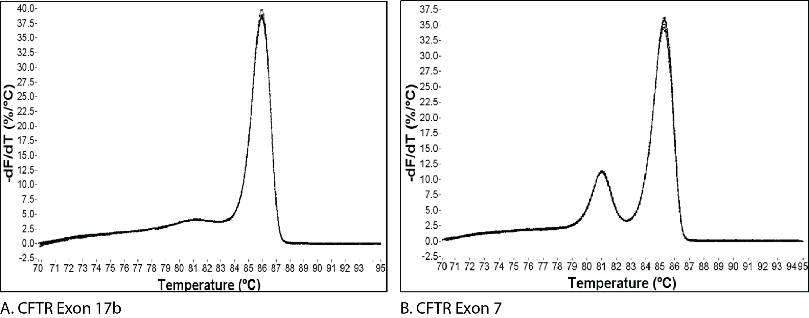

Generating standard curve for new primer pairs
Setting up the plate
- Make cDNA from 1 µg total RNA in 20 µl reaction volume and add 80 µl of ddH2O. This is the starting concentration.
- Make 1:10 dilution series (1:1, 1:10, 1:100, 1:1000, 1:10000) of the sample. If you have multiple samples then combine equal amounts from each to make a pool before making the dilution series.
- The primers (HPLC purified) should have a stock concentration of 10 µM. Usually SYBR Green Master Mix will be at a 2X concentration.
- Prepare a master mix (usually 2 more than you need) of SYBR Green Master Mix (2X) and primers (0.4 µM each).
- Add 10 µl of the master mix to each well by reverse pipeting to avoid bubbles. In a similar fashion add 4 µl of the sample dilution series, primers and adjust the final volume to 20 µl with ddH2O. Run “No Template Controls (NTC)” containing no sample.
- Centrifuge the plate for a minute to ensure all contents are at the bottom of the plate.
- Seal your plate with qPCR optical seals and start the qPCR run on your qPCR machine.
Melting Curves (Testing specificity)
I run the uMelt tool to predict the melting curve of the qPCR amplicon. In general a single peak in the melting curve plot indicates specificity. Below, we can see that the plot on the left (A) show a single peak indicating specificity and the right (A) one has double peaks indicating non-specific amplification.However, there are exceptions based on the amplicon sequence and it is good to run the uMelt tool.
 ## Running a RT-qPCR experiment
Setting up the plate
Dilute cDNA 1:5 with nuclease free H2O.
Set up a reaction with a 2X SYBR green master mix (for e.g. SsoAdvanced from BioRad) as follows:
Reagent Volume Final amount/ concentration 2x SYBR green master mix 10 µl 1x Forward primer 2 µl 250 nM Reverse primer 2 µl 250 nM cDNA 5 µl 100ng - 100 fg Nuclease free H2O 1 µl Total volume 20 µl Make three technical replicate for each biological sample. There needs to be 3 biological replicates. Add NTC and NRT (No Reverse Transcriptase) controls.
Make sure there are no bubbles. Spin the plate at 500xg for 2 minutes.
Run the RT-qPCR protocol and analyse the data (see below).